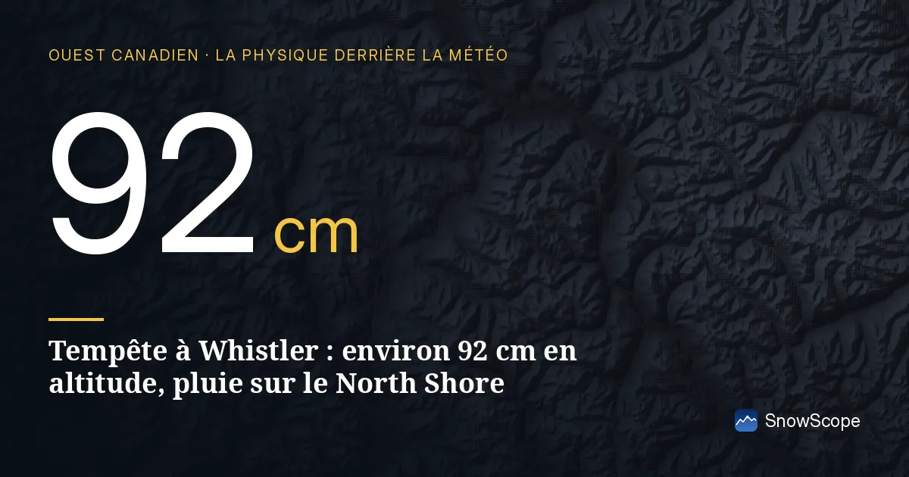
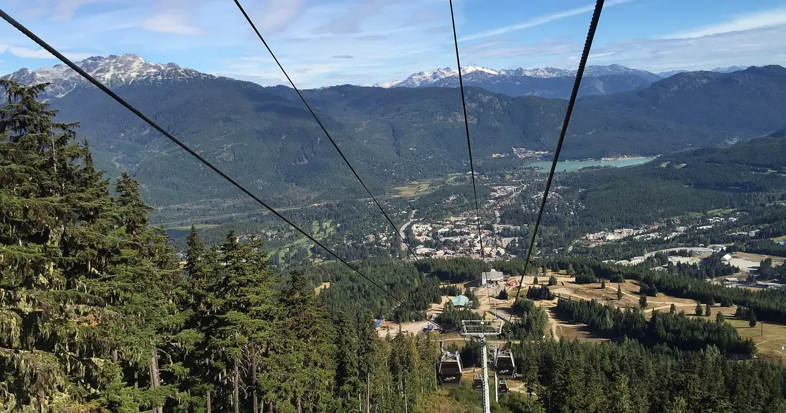
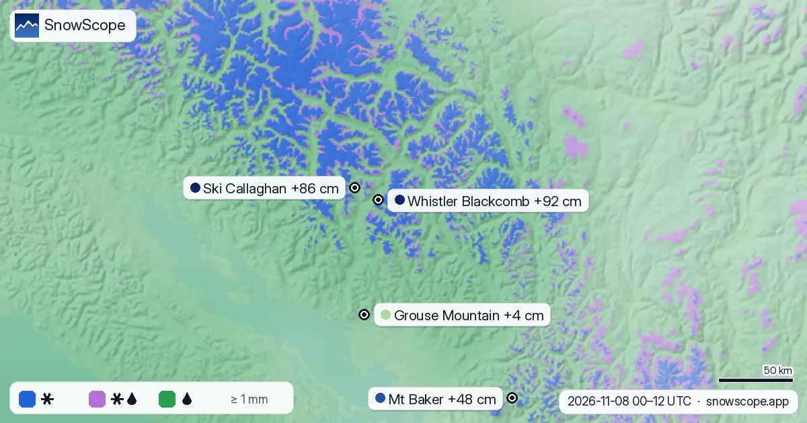

Tempête à Whistler : environ 92 cm en altitude, pluie sur le North Shore
Une tempête chaude et humide se déplace vers les Montagnes Côtières du 8 au 11 novembre. SnowScope montre environ 92 cm de neige fraîche sur le terrain élevé de Whistler Blackcomb, mais les montagnes au-dessus de Vancouver recevront surtout de la pluie : Grouse Mountain reçoit 72 mm de pluie et seulement 4 cm de neige.
Consultez les prévisions neige en temps réel pour Whistler Blackcomb sur l'application SnowScopeHauteurs de neige, alertes poudreuse et carte 3D, gratuitement.

L'altitude décide : le terrain élevé gagne
La tempête divise la région en deux. Au nord de Squamish, les montagnes sont assez hautes pour attraper de la neige : Whistler Blackcomb gagne 92 cm, Ski Callaghan 86 cm. Au sud de la frontière, Mt Baker reçoit 48 cm. Mais les sommets de la North Shore restent dans la bande de pluie : Cypress Mountain reçoit 68 mm de pluie avec seulement 3 cm de neige, et Mt Seymour reçoit 75 mm de pluie sans neige fraîche.
Sasquatch se situe entre ces extrêmes avec 24 cm. La différence n'est pas la distance mais l'altitude. Quand la tempête passe sur un terrain plus bas, elle tombe toujours sous forme de pluie. Quand elle monte sur les crêtes hautes, elle refroidit assez pour neiger.



Le niveau 0 °C se maintient près de 2 100 m
Pendant les heures de pluie, le niveau de congélation à Whistler reste proche de 2 100 m. La neige tombera au-dessus de cette hauteur ; au-dessous, la pluie trempera les pentes. Cela signifie que le terrain alpin reçoit du poudreuse, mais les pistes inférieures et le village font face à une bonne trempe.
La limite de neige—où la neige s'accumule réellement au sol—se situe près de 1 800 m à Whistler parce que la neige fond dans l'air plus chaud et se mélange à la pluie. À des altitudes plus basses, la division est encore plus nette : à 1 500 m, seulement 28 % des précipitations tombent sous forme de neige, tandis que 46 % est de la pluie et 26 % est de la neige mouillée qui collera à la base.

Voir les chiffres
| Date | Whistler Blackcomb (cm) | Ski Callaghan (cm) | Mt Baker (cm) | Sasquatch (cm) | Grouse Mountain (cm) |
|---|---|---|---|---|---|
| 8 novembre * | 65 | 58 | 25 | 20 | 3 |
| 9 novembre * | 1 | 1 | 1 | 0 | 0 |
| 10 novembre * | 26 | 30 | 22 | 4 | 1 |
Ce que les couches nous racontent : neige à 2 000 m, pluie à 1 000 m
En regardant toutes les altitudes de 500 m à 3 000 m, on voit comment la tempête se comporte. Jusqu'à 1 000 m : pluie pure. De 1 250 m à 1 750 m : une bande mixte où neige et pluie tombent toutes les deux, la pluie dominant toujours au plus bas. Au-dessus de 2 000 m : la neige prend le dessus—70 % à 2 000 m, 85 % à 2 250 m, 99 % à 2 750 m.
Quelques centaines de mètres d'altitude changent le bulletin météo d'une trempe à du poudreuse. C'est pourquoi le ski de randonnée au-dessus de la limite forestière peut être du poudreuse tandis que la montée de la vallée est mouillée.

Voir les chiffres
| Altitude (m) | Neige % | Neige mouillée / grésil % | Pluie % |
|---|---|---|---|
| 500 | 0 | 0 | 100 |
| 750 | 0 | 0 | 100 |
| 1 000 | 0 | 7 | 93 |
| 1 250 | 3 | 30 | 67 |
| 1 500 | 28 | 26 | 46 |
| 1 750 | 50 | 23 | 27 |
| 2 000 | 70 | 17 | 13 |
| 2 250 | 85 | 10 | 5 |
| 2 500 | 94 | 5 | 1 |
| 2 750 | 99 | 1 | 0 |
| 3 000 | 100 | 0 | 0 |
L'eau rencontre les montagnes : pourquoi cette tempête est si humide
L'air qui vient du Pacifique est à la fois doux et saturé de vapeur d'eau. Quand le vent le force à monter sur les pentes, il refroidit, la vapeur se condense, et les précipitations sont fortes—110 mm à Whistler seul du 8 au 12 novembre. Au pic de la tempête le 8 novembre, l'air transporte 440 kg d'eau par mètre par seconde.
L'air doux est le problème : même quand il neige, la base est mouillée. La neige mouillée est plus lourde et plus collante que le poudreuse sec, et elle adhère plus facilement au sol en dessous. En arrière-pays, cela compte pour le risque d'avalanche.
Le vent ajoute à l'histoire
Les vents en altitude atteignent environ 113 km/h au pic de la tempête. À la hauteur de Whistler, ces vents décaperont les crêtes et chargeront les gullies et les pentes sous le vent. Le risque de plaque ventée est réel sur un terrain abrupt.
Plus bas, la pluie et le vent ensemble créent une mauvaise visibilité et des conditions boueuses sur toute piste que vous pouvez atteindre.
Ce que cela change pour vous
- Le terrain élevé au-dessus de 2 000 m reçoit de la neige ; les pistes inférieures reçoivent de la pluie mélangée à de la neige. Choisissez votre altitude.
- La base mouillée et la neige lourde signifient que le risque d'avalanche est élevé. Consultez le bulletin d'avalanche d'Avalanche Canada avant d'entrer en arrière-pays.
- Les prévisions changent : consultez la carte de neige en direct à nouveau le matin de votre sortie.
- Sur la route vers les montagnes, attendez-vous à de la pluie dans la vallée et de la neige sur les cols plus élevés—les routes au-dessus de 1 500 m peuvent être glissantes ou fermées.
- La neige mouillée est collante et lourde. Si vous faites de la rando ou du ski de randonnée, commencez tôt et soyez prêt à descendre avant le ramollissement de l'après-midi.
À propos de ces chiffres
Les hauteurs de neige des stations sont la neige la plus épaisse sur le haut du domaine à la date indiquée ; ce sont des estimations pour une zone, pas une mesure en un point. Les prévisions peuvent changer. Consultez toujours le bulletin d'avalanche officiel avant le hors-piste.
Citer ce bulletin
Pour la recherche, l'enseignement ou la presse : chiffres et graphiques réutilisables librement sous CC BY 4.0 avec cette citation.
SnowScope (2026), Tempête à Whistler : environ 92 cm en altitude, pluie sur le North Shore, https://snowscope.app/blog/fr/2026/11/whistler-storm-snow-up-high-rain-below-8-10-november-2026.html, consulté le 2026-11-08
SnowScope (Atlas Labs). (2026, November 8). Tempête à Whistler : environ 92 cm en altitude, pluie sur le North Shore. SnowScope snow reports. https://snowscope.app/blog/fr/2026/11/whistler-storm-snow-up-high-rain-below-8-10-november-2026.html
BibTeX
@misc{snowscope2026whistlerstormsnowuphighr,
author = {{SnowScope (Atlas Labs)}},
title = {Tempête à Whistler : environ 92 cm en altitude, pluie sur le North Shore},
year = {2026},
month = nov,
howpublished = {\url{https://snowscope.app/blog/fr/2026/11/whistler-storm-snow-up-high-rain-below-8-10-november-2026.html}},
note = {Published 2026-11-08 14:35 UTC; accessed 2026-11-08}
}· CC BY 4.0 · Méthodes, données et outils →
Suivre Whistler Blackcomb
Gratuit : un message quand la neige arrive, et la météo chaque matin.
Autres bulletins neige

Banff Sunshine Village mois par mois : environ 100 cm à mi-pente en mars d'un hiver habituel sur 46 hivers passés, avril le plus enneigé en haut, saison jusqu'à fin mai.

Whistler Blackcomb pour tous les niveaux, avec notre historique : environ 370 cm au pic habituel à mi-pente sur 46 hivers passés, mars et avril les plus enneigés.

Whistler Blackcomb a reçu 75 cm de neige nouvelle au sommet en une semaine, puis une tempête douce avec 124 mm d'eau. Un guide simple sur la sous-couche, la neige fraîche, la pluie et la croûte.